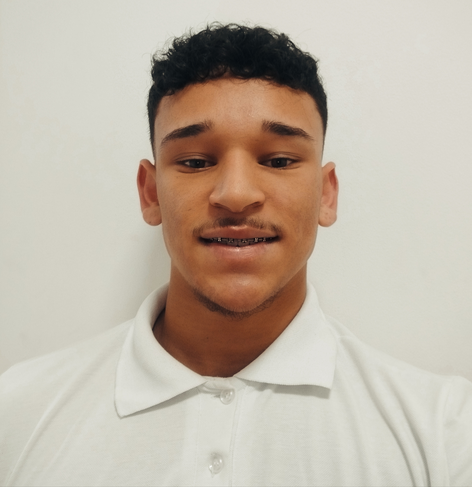
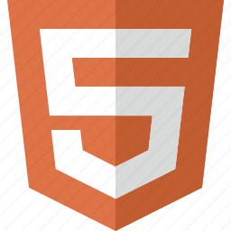

Desenvolvedor Front-End
Desenvolvedor Front-End React
Neste momento busco uma oportunidade de inserção no mercado de trabalho como Desenvolvedor Júnior. Almejo aprendizado e desenvolvimento profissional, de forma a possibilitar crescimento qualitativo e quantitativo para a empresa, integrando todos meus conhecimentos e ideias.


João Paulo
João Paulo Nascimento Silva - 17 anos
Contato
Sobre mim
Sempre gostei de estar em contato com diversos tipos de tecnologias. O que eu não sabia era que essa paixão me levaria ao ramo da programação. Após perceber o quanto me identifico com o desenvolvimento web, mergulhei de cabeça e venho absorvendo conhecimento a cada dia. Atualmente, estou cursando o último ano do Ensino Médio, mas tenho me dedicado a estudar programação em diversas plataformas e me aprofundar na linguagem JavaScript. Pretendo iniciar uma faculdade de Análise e Desenvolvimento de Sistemas assim que concluir o Ensino Médio. Dessa forma, poderei conhecer um pouco mais sobre outras áreas e me desenvolver ainda mais como programador.
Experiência
No momento, não possuo experiência profissional na área de programação. No entanto, sou extremamente motivado a aprender e estou constantemente adquirindo conhecimentos e ferramentas. Gosto de me desafiar a aprender coisas que outras pessoas evitam, pois tenho ambição de me tornar um dos melhores. Acredito que essa ambição é o que me destaca entre os demais. Estou ansioso por uma oportunidade para mostrar que sou a pessoa certa para o trabalho.
Hard skills
HTML5
CSS3

JavaScript

React

Git